Locații de nuntă în Bacău
- locații în director
- 14
- cu cazare în registrul SITUR
- 9
- medie ponderată Google
- 4,5 / 5
- evaluări Google
- 9.956
Cum alegi o locație în Bacău
În Bacău poți începe comparația cu DOUBLE L STUDIOS (hotel), Fiald Hotel & Spa Bacau (hotel), Magic Garden by Vlăduț (restaurant). Aceste proprietăți apar în primele poziții când luăm în calcul împreună nota și numărul de evaluări Google. Salvează adresele care vă interesează pentru a le așeza apoi alături în fișa de comparare a ofertelor.
În fișele proprietăților poți compara dotări concrete la DOUBLE L STUDIOS (grădină, terasă, cazare), Fiald Hotel & Spa Bacau (grădină, cazare, parcare gratuită). Pentru oferta de nuntă, întreabă ce spații și servicii dintre cele prezentate intră în rezervarea privată pentru data voastră.
Dacă vin rude de departe, Fiald Hotel & Spa Bacau are o unitate de cazare asociată în registrul SITUR. Înregistrarea pentru Fiald Hotel & Spa cuprinde 118 locuri de dormit în 59 de spații de cazare. Întreabă câte camere pot fi păstrate pentru aceeași noapte înainte să trimiți invitaților detaliile de rezervare.
Dacă vrei să vezi două proprietăți în aceeași zi, poți continua de la Pensiunea Excelsior spre Conacul Gheorghe Buzdugan din Gheorghe Doja. Punctele lor sunt la 18,9 km în linie dreaptă. Deschide traseul înainte să fixezi ora celei de-a doua vizite, mai ales dacă grupul se deplasează cu autocarul.
Locații pentru vizionare
Ordinea ține cont de nota Google și de numărul evaluărilor. Cum calculăm ordinea
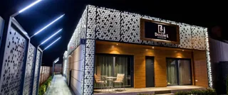
Fotografie a locației · Sursa fotografiei Bacău · Hotel
DOUBLE L STUDIOS
Studiouri cu terasă și curte pe Strada Venus din Bacău, nota 5 din 43 de evaluări. O opțiune de cazare pentru invitați; ce să întrebi despre rezervarea în bloc.
Strada Venus, 600372 Bacău+40 753 838 383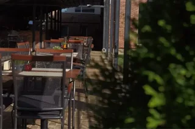
Fotografie a locației · Sursa fotografiei Bacău · Hotel
Fiald Hotel & Spa Bacau
Hotel cu spa în Bacău, cu salon de până la 200 de locuri, piscină și parcare gratuită. Evenimentele sunt lăudate, iar unele camere au primit critici.
Strada Tazlăului 7A, 600372 Bacău+40 21 555 2046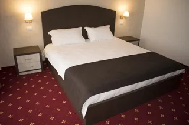
Fotografie a locației · Sursa fotografiei Bacău · Restaurant
Magic Garden by Vlăduț
Pensiune cu grădină, foișoare, cort și terase acoperite în Bacău. Evenimentele sunt frecvente; întreabă de limita de volum impusă de vecini.
Strada Siretului 124, 600380 Bacău+40 743 413 788Fotografie a locației · Sursa fotografiei Bacău · Hotel
Pensiunea Wald' or
Pensiunea Wald' or, Bacău. Grădina de la Wald’or apare într-o relatare chiar în timpul unei petreceri private.
Calea Moldovei 157 BIS, 600353 Bacău+40 770 411 211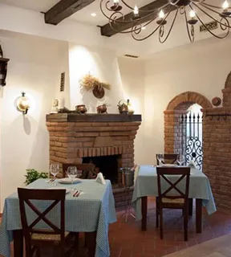
Fotografie a locației · Sursa fotografiei Bacău · Bed & Breakfast
Pensiune Piazzetta Bacau
Pensiune Piazzetta Bacau. Livada și restaurantul Piazzetta sugerează două momente diferite ale aceleiași zile, fotografii între pomi și apoi masă înăuntru.
Calea Romanului 237, 600377 Bacău+40 742 084 452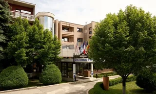
Fotografie a locației · Sursa fotografiei Bacău · Hotel
Dumbrava Business Resort
Dumbrava Business Resort, Bacău. Pentru nunta voastră, cere să vezi separat camera mirilor și tipurile rezervate rudelor.
Strada Dumbrava Roșie 2, 600045 Bacău+40 234 513 302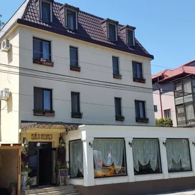
Fotografie a locației · Sursa fotografiei Bacău · Bed & Breakfast
Pensiunea Vila Royal Bacău
Pensiunea Vila Royal Bacău, Bacău. La Villa Royal din Bacău, oaspetele citat își amintește în primul rând primirea și atmosfera din vilă.
Strada Alecu Russo 26, 600178 Bacău+40 744 953 899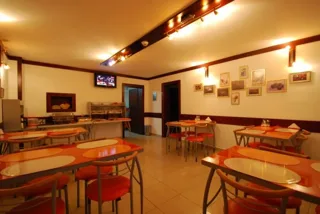
Fotografie a locației · Sursa fotografiei Bacău · Cazare în regim hotelier
Casa iRMA ( ex pensiunea Elite)
Pensiune în Bacău, pe Strada Banatului, utilă pentru cazarea invitaților: camere spațioase și parcare interioară, dar recenzii critice în 2026.
Strada Banatului 15, Bacău+40 723 675 009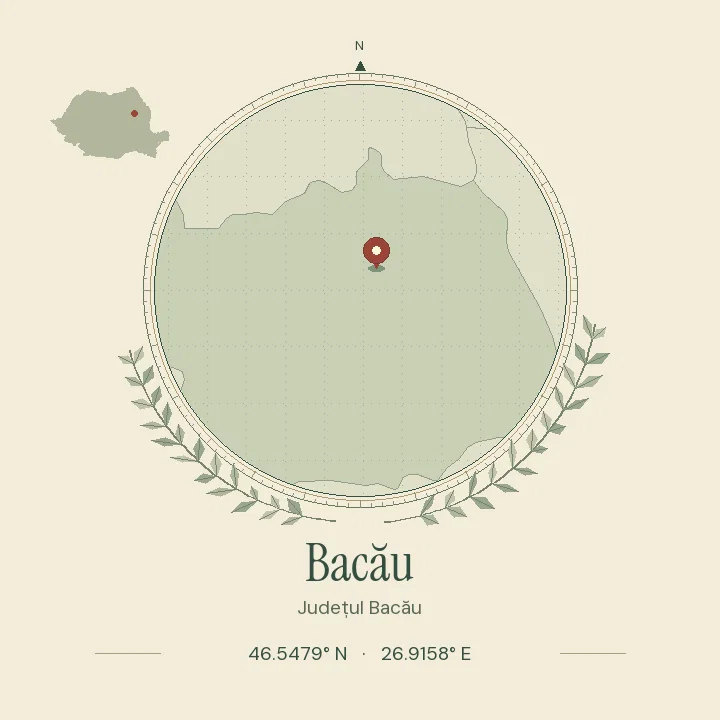
Hartă ilustrată Bacău · Pensiune
Pensiunea Excelsior
Pensiunea Excelsior. La Excelsior, suprafața de o mie de metri pătrați documentată pentru curte îi cuprinde și pe cei care lasă mașinile în incintă.
Strada Toamnei 31, Bacău+40 234 589 377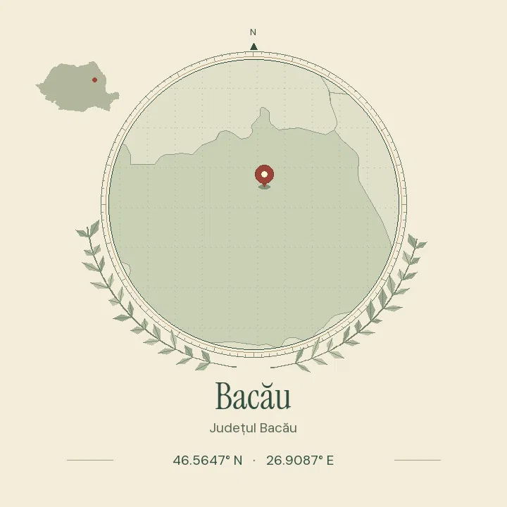
Hartă ilustrată Bacău · Hotel
President Hotel
President Hotel, Bacău. Un vizitator de la President din Bacău povestește că a găsit cu dificultate loc pentru mașină aproape de intrare.
Bulevardul Ioniță Sandu Sturza 11, Bacău+40 234 588 000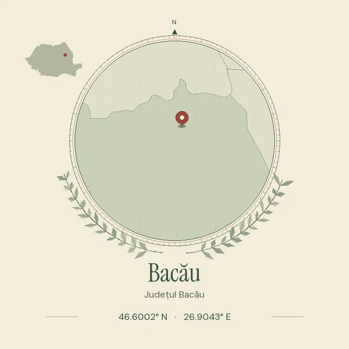
Hartă ilustrată Bacău · Cazare
Pensiunea MOLDAVIA
Pensiunea MOLDAVIA, Bacău. Un oaspete care scrie despre Moldavia asociază spațiile verzi cu liniștea și amintește separat masa și camerele.
Calea Moldovei 157, 600353 Bacău+40 740 776 185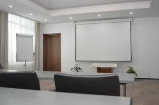
Fotografie a locației · Sursa fotografiei Bacău · Hotel
Hotel EMD Bacau
Hotel din Bacău cu sală de evenimente, terasă, piscină și spa, care găzduiește și nunți. Recenzii despre curățenie și evenimente simultane.
office@complexemd.ro, Bulevardul Unirii 43, 600398 Bacău+40 334 405 771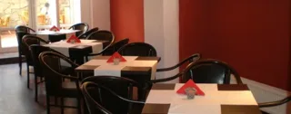
Fotografie a locației · Sursa fotografiei Bacău · Pensiune
Pensiunea Studio
Pensiunea Studio, Bacău. La Studio din Bacău, un oaspete descrie intrarea auto ca îngustă și spune că a urcat la cameră fără lift.
Strada Oituz 17, 600266 Bacău+40 730 823 283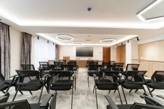
Fotografie a locației · Sursa fotografiei Bacău · Hotel
Hotel Decebal
Hotel central în Bacău, cu terasă panoramică și restaurant, dar cu recenzii recente despre zgomot, parcare și camere. Ce să ceri în scris.
Bulevardul Ioniță Sandu Sturza 2, 600268 Bacău+40 234 997
Întrebări despre locațiile din Bacău
Unde pot dormi invitații în Bacău?
În registrul de cazare SITUR găsim Fiald Hotel & Spa Bacau (118 locuri de cazare), Magic Garden by Vlăduț (18 locuri de cazare), Pensiune Piazzetta Bacau (23 de locuri de cazare). Verifică ce camere sunt libere pentru noaptea evenimentului.
Ce proprietăți din Bacău au grădină sau terasă?
DOUBLE L STUDIOS (grădină, terasă); Fiald Hotel & Spa Bacau (grădină); Magic Garden by Vlăduț (grădină). Cere administratorului condițiile de folosire pentru o petrecere privată.
Care locație din Bacău are cele mai multe evaluări Google?
Dumbrava Business Resort are 1.970 de evaluări în profilul Google folosit la documentare. Evaluările acoperă și alte experiențe la proprietate, inclusiv vizitele fără eveniment.
Unde apare o intrare accesibilă în Bacău?
Profilurile Google indică o intrare accesibilă la Magic Garden by Vlăduț, Pensiunea MOLDAVIA. Pentru o cununie în exterior, cere detalii despre traseul dintre intrare și zona cu scaune.
Ce alte localități pot include într-o vizionare lângă Bacău?
Cele mai apropiate adrese comparate pe hartă sunt în Gheorghe Doja, Dofteana, Târgu Ocna. Găsești mai jos distanțele dintre proprietățile folosite pentru această comparație.
Vizionări în apropiere
- Gheorghe Doja · 1 locație. Între Pensiunea Excelsior și Conacul Gheorghe Buzdugan sunt 18,9 km în linie dreaptă.
- Dofteana · 1 locație. Între Pensiunea Excelsior și Castelul Ghica din Dofteana sunt 37,6 km în linie dreaptă.
- Târgu Ocna · 1 locație. Între Pensiunea Excelsior și Casa la Conac (Targu Ocna) sunt 38,2 km în linie dreaptă.